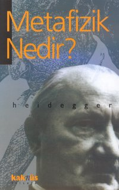

Havf hiçliği ifşa eder.
Havf içinde boşlukta yüzüyoruz. Daha açıkça: Varlık bütünlüğü ile kayıp eridiği için havf bizi boşlukta dolaştırıyor. Biz de birlikte kendimizden sıyrılıyoruz. Bu suretle bizzat biz -varolan insanlar- varolanın ortasında kendimizden geçip eriyoruz. Bunun içindir ki esas bakımdan, 'sana' ve 'bana' değil, 'birisine' birşeyler olur. Hiçbir şeye tutunulması mümkün olmayan boşlukta kalmanın sarsıntısı içinde yalnız varolmak, daha mevcuttur.
Havf içinde dil tutulur. Çünkü varolan, bütünlüğü içinde erir ve hiçliğin baskısı kendini hissettirir. Ve onun varlığı karşısında 'dır' demek susar. Havf içinde bize birşeyler olduğu zaman, çok vakit boş sükutu, gayesiz kelimelerle ihlal etmeyi aramaklığımız sadece hiçliğin mevcudiyetinin bir delilidir.
HAVF: korkmak, bilinen veya hissedilen bir işaretten dolayı irkilmek, bir tehlike karşısında ne olacağı endişesi içinde olmak
kaknüs yayınları: 28 felsefe serisi: 1
1.basım: aralık 1998, İstanbul
2.basım: ekim 2003, İstanbul
kitabın adı: metafizik nedir?
yazan: martin heidegger
yayma hazırlayan: ilyas arslan
teknik hazırlık: kaknüs ajans
kapak düzeni: fuat fidan
iç baskı: alemdar ofset
kapak baskı: milsan cilt: dilek mücellit
kaknüs yayınları tokölesi yayıncılık ve tanıtım hiz. merkez: seiman ağa mah., selami ah efendi cad., no: 11, üsküdar, İstanbul tel: (0 216) 341 08 65 - 492 59 74/75 faks: 334 61 48 dağıtım: çatalçeşme sk., defne han, no: 27/3, cağaloğlu, İstanbul tel: (0 212) 520 49 27 faks: 520 49 28 www.kaknus.com,www.kizkulestnet.com,www.kizkulesi.net
İçindekiler
I -Martin Heidegger'in Felsefesi
II -Varlık (Existenz) Felsefesi
Bir Metafizik Sorusunun Gelişimi
Sorunun İşlenmesi ve Hazırlanması
26 Eylül 1889 - 26 Mayıs 1976
Katolik bir zangocun oğlu. Freiburg Üniversitesinde Katolik ilahiyatı ve ortaçağ Hristiyan felsefesi okudu. 1907 yılında Triniiy Kilisesinin,rahibi, bu 17 yaşındaki liseli delikanlıya Brentano’nun Aristoteles'e Göre Varlığın Çok Anlamlılığı Üzerine adlı kitabını verir. Bu kitap Heidegger’in entelektüel tarihinin başlangıcıdır. Üniversite’de iken Husserl’in Mantığı Araştırmak’ının ikinci cildi Fenomenolojı Heidegger’i derinden etkiler. 1911 yılından itibaren felsefe dersleri alarak, ilgisini kesmemekle beraber teolojiden uzaklaşıp felsefeyi asıl branş olarak seçer. Varlık problemi üzerinde yoğunlaşır. Şairlerden Hölderlin, Rılke ve Trakl, romancılardan Dos toyevsky, felsefecilerden Kierkegaard ve Nietzche’nin eserlerini okur.
Heidegger Kierkegaard, Nietzche ve Husserl’den etkilenerek Varlık ve Zaman sorununun doğru cevaplanması için tarihsel çerçeve içinde düşünülmesinin gereğini anlar. Kartezyen geleneğe bağlı epistomoloji temelli dualist Varlık anlayışını yeniden yorumlayarak yerine ontoloji temelli Varlık kuramını geliştirmeyi hedefler. Ona göre “düşünüyorum, öyleyse varım” değil; “varım, öyleyse düşünüyorum”dur. Heidegger’e göre bütün modern felsefe cogito felsefesinden başka bir şey değildir. Ancak bu felsefenin unuttuğu bir şey vardı: Zaman. Yani olmaklık’ın tarihîliği. Felsefesinde -Husserl’den devraldığı- fenomolojik yöntemi uygulayan Heidegger, insanın bu dünyaya fırlatıldığını ve ölene değin fırlatılmış olarak kalacağını ifade eder. “Varlığı düşünerek” kurtuluş imkanını elde edebilmek için Heidegger, dilbilim ve yorumbilim yöntemlerinden yararlanır. Almanca, Yunanca ve kendine özgü etimolojiyi kaynaştırarak Almanca'da sonu -olmak ile biten yüz sözcük üretir.
1930’lann başında Kefire adı verilen bir dönüşüm yaşar. Varlık ve Zaman’da ortaya koyduğu somdan uzaklaştığı iddia edilir. Ancak o bunları reddeder. Bu dönemden sonra Dasein’den (İnsan Varlığı) daha çok Sein (Varlık) ile ilgilenir.
1933’te Hitler’in iktidarı ele geçirmesiyle Freiburg Üniversitesi’ne rektör seçilir. Nazizmi destekleyici konuşmalarda bulunur. Ancak 1934'ün başında Hitlerciliği insanlığın yapısal bir hastalığının tarihsel patlayışı olarak niteler. Şubat ayında rektörlükten ayrılır. 1944’te üniversitedeki derslerine son verilir, 1945-50 arası dönem boyunca her türlü öğretim hakkı engellenir. 1959’da emekliye ayrılır. Tamamlandığında 57 cilt tutacağı sanılan Bütün Eserleri içinde Heidegger’in önemli eserleri şunlardır:
Die Leh ra votn Urteil im Psychologsmus: Em karitisch-positiver Beitragzur Logik (1914, Psikolojizmde Yargı Öğretisi: Mantığa Eleştirel-Olumiu Bir Katkı), Die Kategorien und Bedeutungslehre de s Dun s Scotııs (1916, Duns Scotus’un Kategori ve Anlam Öğretisi), Sein und Zeit (1927, Varlık ve Zaman), Was ist Metaphysik? (1929, Metafizik Nedir?), Kant und das Problem der Metaphysik (1929, Kant ve Metafizik Sorunu), Hölderlin und das Wesen der Dichtung (1936, Hölderlin ve Şiirin Neliği), Holzwege (1950, Orman Yollan), Einftihrung in die Metaphysik (1953, Metafiziğe Giriş), Was ist das-die Philosophie? (1956, Nedir Bu Felsefe?), îdentitat und Differenz (1957, Özdeşlik ve Aynm), Unterwegs zuhr Sprache (1959, Dil Yolunda), Nietzche (1961), Die Metaphysik als Geschihte des Seins (1961, Varlık Tarihi Olarak Metafizik).
METAFİZİK NEDİR?
Martin Heidegger
Çevirenler:
Mazhar Şevket İpşiroğlu-Suut Kemal Yetkin
Elinizdeki eser, Mazhar Şevket İpşiroğlu ve Suut Kemal Yetkin tarafından yapılan ve Vakit Yayınlarınca 1935'te basılan çeviri esas alınarak hazırlanmıştır.
Çeviriyi aynen korumakla birlikte, günümüz felsefe okuyucuları ve felsefeye ilgi duyanlar tarafından daha iyi anlaşılabilmesi için kimi kelime ve ifadeler şu an kullanılan Türkçe ile karşılanmıştır. Ancak burada özellikle bir şeyin altını çizmekte yarar gözetiyorum: Heidegger'in, bilhassa gündelik dildeki anlamıyla sık sık rastlanan 'korku'yu (furcht) metafizik ve ontolojik 'Korku'dan (angst) ayırt etmesi nedeniyle ben de -çevirmenlerin de tespit ettiği şekliyle- birincisini 'korku' olarak; ikinci sini ise 'havf olarak bıraktım; herhangi bir sadeleştirme yolunu izlemedim.
Mazhar Şevket İpşiroğlu-Suut Kemal Yetkin
Yeni Avrupa bir kültür buhranı geçiriyor. Bu genel buhran kendisini felsefe çevresinde de duyurmaya başladı. Hakikât ve bilgi sorusuna verilen cevaplar belki hiç bir devirde (ne eski çağda, ne orta çağda, ne de Rönesans devrinde) zamanımızda olduğu kadar birbirine karşıt görülmemiştir.
Geniş bir karışıklığı ve bozgunluğu hatırlatan bu durum, Max Scheler'e göre iş bölümünün bir sonucudur. Hayatın her çevresinde olduğu gibi ilim çevresinde de uzmanlıkların gereğinden artık üremesiyle meydana gelmiştir. Uzmanlık alanları "ilim, ilim içindir' veya 'ilim, mide içindik prensibinin egemenliği altında erkinlik kazandıkça birbirlerinden ayrılıyor ve birbirlerine karşı yabancılaşıyor. Hele tabiat ve tarih ilimleri birbirine tamamıyla yabancı iki dünya gibi karşı karşıya duruyorlar. Bir zelzele esnasında, insanların ayaklan altındaki toprağa karşı duydukları emniyet nasıl kaybolursa ve dengeleri nasıl bozulursa, ilimler de kendilerine birlik ve nizam veren temel prensipten uzaklaştıkça öylece manalarını kaybediyorlar: Buhran başlıyor. Dilthey diyor ki: 'Hayat, ölüme ve hastalığa, dağınıklığa ve anarşiye karşı koyabilmek için dayanacak bir temel arar. Zamanımızda nasslar (kesinlik ,açıklık) (bilhassa dinî nasslar) artık yıkılmıştır. Yeni bir temel aramak lâzımdır. Bu temeli bize ancak felsefe verebilir. 'Bilginin Özü nedir? Umumiyetle bilgi nedir?' sorularını yeniden sormalıyız.
Bu soruların cevabı, belirli bir bilgi alanına ait bulunan araştırma neticelerinin bütün bilgi sahasına genişletilmesiyle tabiîdir ki elde edilemez. Meselâ yakın zamanlara kadar bilgi nazariyesi denildi mi 'bir bilgi tarzının, müsbet ilimlerin nazariyesi' anlaşılıyordu. Moritz Schlick fizikin dayandığı temel nazariyeleri inceleyen kitabına, genel bilgiden bahsediyormuş gibi 'Genel Bilgi Nazariyesi' adını veriyor. Nasıl Kral Midas’ın elinin değdiği her şey altın olursa öylece bütün insan dünyası da fizikçi için fizik dünyası, tarihçi için tarih dünyası, psikolog için içsel hayat dünyası ilâh oluyor. Bu durum karşısında ilim alanındaki buhranın felsefeye sıçramamasına imkân var mı?
Dediğimiz gibi bilgi sorusuna bu şekillerde cevap verilemez. O halde bilgi problemine hangi şekli vermeliyiz?
Bilgi insanın kendi eseri olduğu için, felsefî antropolojiye göre 'umumiyetle bilgi nedir?' sorusunun daha köklü bir surette, 'insan nedir?' tarzında sorulması gerekir. Fakat 'umumiyetle' insanın ne olduğunu ihtisas ilimleri bize bildiremediğinden 'insan ilmi -felsefî antropolojinin kendine ait bir usulü olmalıdır. Felsefî antropoloji, insanın ne ve nasıl olduğunu, varlığını ve özünü araştıran bu ilim ancak ‘metafizik' olarak müstakil ilimlere birlik ve düzen verebilir. Bütün hakikatler ondan çıkarılmalıdır. 'Bir felsefî antropolojinin ödevi, insan olmanın esas yapısından, insan eserinin, (dilin ve devletin, mitolojinin ve ilmin, sanatın ve dinin tarihî ve İçtimaî varlığının) nasıl çıktığını tamamıyla göstermektir.1
1- Max Scheler, die Ştellung âes Menschen im Kosmos, s, 105 (Bu eser, İnsanın Kosmosdaki Yeri adıyla Türkçe'ye çevrilmiştir.)
Felsefî antropoloji ile ilim âlânı yeni bir ufukla genişlemiş bulunuyor. Bu yeni sahada, araştırma, hâdiselere değil özlere, İzafî olana değil mutlak olana, eşyaya değil insana yani metafiziğe yöneliyor. Bu suretle felsefe iki mana kazanıyor: Bir taraftan müsbet ilimlerin dayandığı temelleri, esas mütearifeleri (wesensa-xiomatik) veriyor, öbür taraftan Hegel'in tabiriyle "mutlak olana pencere açıyor.
Felsefeyi ve ilimleri yeni bir hayat hamlesiyle aşılamak isteyen felsefî antropolojinin başında bugün Almanya'da Martin Heidegger bulunur.
"Niçin varlık olsun da daha ziyade hiçlik olmasın?" İşte Heidegger'e göre felsefenin esas sorusu! Fakat Heidegger'in varlık hakkındaki bu sorusuna özgünlük (hususiyet) veren, bu sorunun dayandığı temel oluyor. Bütün soruların, 'varlık hakkındaki' sorunun da dayandığı ontoloji, insan varlığının, varlığı bakımından çözülmesi (tahlili) ile aranılmalıdır.
Dünya içinde bulunan varlığımızın, varlığı bakımından çözümlenmesi, varlığımızın hakikî manasıyla 'ne?' olduğunu gösterir. Biz, bir dünya içinde bulunduğumuz için, dünya mevcudiyetimize 'çevre dünyası' olarak ait bulunduğu için, varlıkda (sein) ancak mevcudiyetimizin incelenmesi ile anlaşılabilir. Benim ve diğerinin 'yaşamak' zorunda olduğumuz 'hayat', ‘mevcudiyet' aranılmalıdır, o kadar.
Görülüyor ki Heidegger'de metafizik eski manasını kaybediyor, eşyayı ve cevherini değil, insanı ve özünü araştırıyor; soyuta değil somuta ve hayata yöneliyor.
İnsanın ne olduğunu gösterecek olan bu 'existenzielle analytik', tecrübî antropoloji disiplinlerinin (yani manevî ilimlerin) sonuçlarını toplamaz. Max Scheler'in antropolojisi -metafizik karakterine rağmen- insanın varlığını ve özünü kâinattaki onuruna (mevkiine), organik ve inorganik dünya ile ilgililiğine, tarihî ve sosyal dünyasının çok çeşitli tarzlarına işaret ederek tayin etmeye çalışıyordu. Bu itibarla Scheler'in araştırma tarzına "objektif metafizik! antropoloji7 denilmiştir. Halbuki Heidegger' e göre insanın 'özü', ilmin (psikolojinin, sosyolojinin, biyolojinin v.s ..) sonuçlarından tamamıyla ayrılarak kendi varlık yapımızın (Daseinsstruktur) tahlili ile aranılmalıdır. Mevcudiyet, ancak 'kendi içinden' anlaşılabilir. Heidegger'in antropolojisine, Scheler'inkinden ayırt edebilmek için 'antropolojik metafizik' denilebilir.
Fakat Heidegger, İlmî düşüncenin kaynağa ait olmayan üremiş şey'iliğine işaret ederek cevap veriyor.
Diyor ki: Descartes 'Cogito'yu çözümledi 'Sum'u müphem bıraktı. Daha doğrusu düşüncenin mevzuu daima bir 'şey' olabileceği için Cogifo ergo sum cümlesiyle 'Sum' şey'î bir varlık veya bir 'done' manasını aldı. Descartes'le birlikte eski hristiyan antropolojisi de İnsanî hayatla olan kaynaksal birliğinden ayırt ederek basit ve soyut bir done veya bir 'şey" olarak anlamıştır. İnsanın tamamıyla parçalanmasının bir sonucu olan bugünkü kültür buhranı mevcudiyetin hayatla olan başlangıçtaki birliğinin ve bütünlüğünün koparılmasıyla başlar.
Mevcudiyeti olduğu gibi aslî mahiyetiyle anlamak istiyorsak hayata -kendisine şekil veren ve prensibini kendisinde gizleyen hayata-, yaşayan varlığa tekrar geri dönmeliyiz. İnsanın varlığı, dünya içinde varlıktır; insan 'şey' değil 'şahsiyet'dir. İnsan soyut bir done değil, gelişimde olan somut hayattır, yaratıcı olan hayattır. Varlığın anlaşılması bu gelişim ile doğar, varlık hakkındaki bilgi bu yayılma ile meydana gelir. 'Düşünüyorum o halde varım' cümlesi, 'var olduğum için, bir varlık olduğum için düşünüyorum' şekline çevrilmelidir. Kaynağı ve özü bakımından ilim, ilim için değil hayat içindir: 'Bilgi mevcudiyet tarzına tâbidir.'
Hayat, akıl ile kavranılamaz; hayat irrationel'dir tezinde Nietzsche'den beri gelen ve Bergson'da, Dilthey'de, Jaspers'de son şekillerini alan hayat felsefesinin devamı görülüyor. Fakat, geleneksel hayat felsefesi, ilmî kavramcılık karşısına 'akılla kavramlamayan' hayat nehrini koymakla iktifa ettiği halde, Heidegger bir adım ileri atıyor ve hayatın şekilsiz ve nereye gittiğini bilmeyen bir akış değil; bir şekil, prensibini kendi içinde bulunduran bir "bütün' olduğunu söylüyor/İlmî kavramlar, hayat 'irrationnel' ve kavranılamaz olduğu'için değil, belki mevcudiyet yapısının somut varlığını aşacak derecede genel oldukları için hayata uymuyorlar. Felsefî antropoloji .mevcudiyeti bütün özü ile göstermeyi üstüne almıştır.
Görülüyor ki Heidegger, akılla kavranılamayanın ve ferdî olanın yalnız yaşanılacağına değil, kavramlarla ifade olunabileceğine de kâni bulunuyor. Hiscilik (sensualisme) ve mysticisme, Heidegger'e kuru akılcılık (rationalisme) derecesinde yabancıdır. Somut ilimcilik tâbiri belki onun felsefî telâkkisini ifade ediyor. Alman felsefesinin idealist geleneğiyle Heidegger bu bakımdan birleşiyor. Hegel'e göre de mefhum (tezatların birliği ve diyalektik olarak) somut hayatla beşli değil midir? Fakat Hegel 'yukarıdan' başladığı halde Heidegger 'aşağıdan' başlıyor. Heidegger'in, mevcudiyeti varlığı bakımından tahlili bu hususiyeti gösterecektir.
Mevcudiyetin tahlili (daseinsanalyse) iki safhalı bir processus içinde vukua geliyor.
1.Mevcudiyet -imkânları bakımından- tavsif olunuyor.
2.Bu suretle elde edilen mevcudiyet yapıları, mevcudiyeti mevcudiyet yapan 'öze' irca olunuyor.
Gündelik hayat tecrübeleri araştırmanın başlangıç noktasını veriyor. Mevcudiyet dünya içindedir; dünya içinde var olan bir varlıktır; eşya ile ilgilidir; diğer insanların arasındadır; kendisi kendisine sorudur. Çevre dünyası ile çevrili bulunmak (urmvelthaftigkeit), birlikte bulunmak (miteinandersein) kaygı ve endişe (Sorge), merak ve sevinç (Freude, Neugier) vs. ...Gündelik hayata hususiyetini verir. 'Ne kendi mevcudiyetimiz, ne de ona 'ait' olan dünya basit ve soyut bir done olarak anlaşılmamalıdır. Her şey hayatın "bütünlüğü' içinde köklenir. Bu 'aidiyet" şekil, mana ve ifade verir; bu aidiyet insanın düşünen (Descartes), isteyen ve insiyakları içinde yaşayan (Freud) bir mahluk olmadan evvel içsel bir mizaç mahlûku olduğunu gösterir. İnsan ancak ‘mizaç insanı' olarak hayatın içindedir. Mizaç insanında suje ve obje ikiliği yoktur. Mizaç insanı olmak sıfatı ile eşya olmadan kurtulur, yaratıcı şahsiyet oluruz.
Bu gündelik hayatın ve mevcudiyetin içinde asla ve öze ait olan nedir? Bu soru ille sorulmalıdır. Çünkü Heidegger'e göre varlık imkânları varlık İdesine irca olunmadıkça varlığın yorumu aslî olamaz. Gündelik varlığı, asıl varlık yapan "şeyin" bilinmesi isteniliyor. 'Aslı' burada Scheler'de öz (wesen) kelimesine tekabül ediyor. Özlü mevcudiyet gerçel mevcudiyettir. Onu bilmek mevcudiyetin özünü göstermekle olur. Mevcudiyetin özünü mevcudiyeti tamamlayan 'şey' bize bildirir.
Mevcudiyetin tamamlanması ne ile mümkündür? Heidegger cevap veriyor: Ölümle... Hayatın hakiki manası, ölüme götürmesindedir. "Ölüm, mevcudiyetin en hakikî en emin yetişilinemiyen imkânıdır." Bütün hayat imkânları, mahiyetleri bakımından orada toplanırlar, orada birleşirler. Mevcudiyet en derin manasıyla 'ölüme giden varlıktır, (das sein zum tode), yani sonu olan mevcudiyettir.
Heidegger'e, mevcudiyetimizin araştırılmasıyla kazanılan bu "sonu olmak' hususiyeti problem oluyor. Sonu olan mevcudiyet, zaman içinde bulunduğu için, 'zaman' varlığın sorusudur. 'Zaman kendisini mevcudiyetin ufku olarak mı ifşa ediyor?7 İşte bu soru ile Heidegger, ontolojisinin birinci cildini kapatır.
Heidegger'in zaman tahlili 'Varlık ve Zaman’ın en derin ve dikkate değer kısmını teşkil eder. Dilthey - York’ın ‘mevcudiyet tarihîdir' tezi burada esas iddiayı teşkil ediyor.
Filvaki hayatımızın tarihî boyutu haiz bulunması, insan mevcudiyetine hususiyetini vermez mi? Allah'ı, sonsuz olanı zaman içinden sıyrılmış, zamanın dışında tasavvur ederiz. İnsan olmayan yaratıklar, zaman içinde gelişir, zamanın içindedir. Fakat insan, yalnız insan zaman içinde bulunduğu halde zamanı aşabiliyor. Çünkü o, zaman içinde yaşamakla kalmaz, yaşadığını bilir de. Bütün yaratıklar gibi insan da muayyen bir gerçek (realite) içinde bulunmakla beraber, diğerlerinden farklı olarak yalnız 'o' artık mevcut olmayan geçmiş bulunan bir zaman içinde yaşar, yahut ümit ve göresi ile daha mevcut bulunmayan, gelecek olan zamanı hazırlar/insanüstü tarihsizdir. Hayvan ve bitki -içinde gelişmekle beraber mevcudiyetine ait olmayan- bir tarihe maliktir. Fakat insan7 bizzat 'tarih' değil midir?
Almanya bugün Heidegger'de en büyük filozofunu görüyor. Bilhassa -Almanya'daki son ulusal devrimle- hümanist kültür ve bu kültürün zaman ve mekân dışında, 'sonrasızlık alanında7 sakin bulunan kozmopolit insan ideali soruya çekildikten sonra bütün Alman gençliğini onun peşinde görüyoruz. Bundan tabii de ne olabilirdi. Heidegger tarihî insanın antropolojisini veriyor. Tarihî insan sonlu mevcudiyettir. 'Sonluluk alanında7 (Hegel) gerçek (realite) ile arasındaki sıkı münasebet ona şekil, mana ve hususiyet verir... Münasebette bulunduğumuz realitenin ilk plânında ise mensup bulunduğumuz milletin kendisi gelir. Tarihî insanın tipi her şeyden önce ulusal şuurunu anlayan insanda şeklini alır. Heidegger millî yetiştirmeyi (education), yeni bir insan tipini ve idealini hazırlayacak olan kültür politikasına en emniyetli temeli atıyor.
Fakat Heidegger yalnız tarihî insanın antropolojisini vermemiştir. Kendi şahsiyetiyle bu insan tipinin bilfiil nasıl gerçekleşeceğini de göstermiştir. Alman ulusunun aydınlarına yalnız Önder değil, Örnek de olmuştur.
Heidegger’in düşünüş tarzı, bir soruyu ortaya koyuşu, cevabım vermeye uğraşışı ancak 'tarihî' tabir ile karakterize olunabilir/Heidegger'le felsefî-düşünce, tarihî-düşünce oluyor. Metafizik, somutun ilmi oluyor. 'Bütün'ün yalnız yayılarak değil, derine, köke gidilerek de elde edilebileceğini ondan öğreniyoruz.
Heidegger üslubunun ağır ve anlaşılması güç olduğu söylenmiştir. Tarihi-somut düşünmeye alışmadığımızdandır. Heidegger'in eserlerini okurken daima harikulâde bir vak'aya şahit oluruz: Her kelimenin içinde uyuklayan (aslî) enerjiler dilin soyut ve şematik formlarını kemirir, kırar ve birdenbire bütün çıplaklığı ile meydana çıkar. Bir sihirbaz değneği ile temas etmiş gibi her kelime aslî-tarihî manasını alır, hacim ve öz kazanır.
24 Haziran 1929'da Heidegger tarafından Freiburg Üniversitesi Aulasında verilen bir açış dersini, burada dilimize çeviriyoruz. ‘Metafizik Nedir?” 1 adını taşıyan bu küçük eser, bir metafizik sorusunun gelişmesiyle başlıyor, işlenmesiyle devam ediyor ve cevabıyla bitiyor. Fakat Heidegger eski manada metafizik yapmadığı için (yani araştırmasının ağırlık merkezini eşyanın cevheri değil, mevcudiyetimizin özü teşkil ettiği için ve felsefî antropoloji bakımından metafiziğin ‘mutlak olana pencere' açmakla beraber ilimlerin de aksiyomlarını vermesi icab ettiğinden) bu soru, ilim yapan insan varlığının -geliştirilen- bir sorusundan başka birşey değildir.
1 Was İst Metaphysik, 1931, Bonn Cohen
İlim yapan insan "var olana' yöneliyor. Fakat varlık -zıddı olan her kavram gibi, meselâ güzellik, iyilik, doğruluk v.b.. gibi- ancak zıddı olan kavramla ve kavramın içinde bir mana kazanabilir.Yanlış" olmasaydı "doğru" olamazdı, çünkü doğru yanlışa karşı mücadele demektir; "fena" olmasaydı "iyi" istenilmeyen bir şey olurdu, çünkü iyi olanı istemek "fena" olanı değillemek demektir.Aynı şekilde "hiçlik" kavramı olmasa varlıktan bahsedemezdik, çünkü varlığın sınırı hiçliktir. Böyle olduğu için de ilim adamı kendine ait olanı temin ettiği anda bir "başka”sından bahsediyor: "Yalnız varlık aranmalıdır: - onun dışında hiç birşey; biricik varlık: onun ötesinde - hiç bir şey; münhasıran varlık: onun üstünde - hiç bir şey. Bu hiçlik de nedir?"
Heidegger hiçliği kendisine soru yapıyor. ,
Fakat "hiçlik nedir?" sorusuyla hiçliğin "birşey" olduğu zımnen söylenmiş olmuyor mu? "Var olan hiçlik" mantık bakımından bir abesi (absürde) ifade etmez mi? Hiçlik problemini ortaya koymak, yani hiçliğin ne ve nasıl olduğunu sormak, "sorulanı" tersine çeviriyor, soru kendine hâsıl olan konusundan sıyrılıyor.
Görülüyor ki hiçlik sorusunu (dolayısıyla tezadların birliği ve diyalektik problemini), genel mantığın herkes tarafından kabul edilen temel kurallarını (tenakuz prensibini) yere çalıyor. Bu dilemma ile Elealı Zenon'dan, Heraklit'ten Hegel'e kadar birçok filozof uğraşmıştır.* Heidegger de uğraşıyor. Verdiği cevap şudur: Hiçlik sorusu (zımnen Diyalektik problemi) mantık tarafından değilleniyor. Fakat hiçlik değillemeden daha kaynaksaldır. Hiçlik 'değil'in ve 'hayır deme'nin ana kaynağıdır.
* "Diyalektik" tarihi hakkında bak, B. Croce, Cioche 6 doe morto della filosofia di Hegel, Bölüm IV.
‘Mantığın' egemenliğini soruya çeken bu tezle Heidegger kendisini bu defa şu çetin sorular karşısında buluyor: “O halde hiçliği nasıl bulmalıyız, ona nerede rast gelebiliriz?”
Bu sorunun işlenmesiyle ve cevabıyla insan varlığı şimdiye kadar gizli kalan derinlikleriyle gözlerimizin önünde açılıyor.İnsanın 'düşünen' 'isteyen' bir yaratık (mahlûk) olmadan önce 'duyan', 'hisseden' içsel bir mizaç mahlûku olduğunu görüyoruz.Evvelâ mizaç ve histen ne kasd olunuyor, bunu anlayalım: 'His (gefühl) dediğimiz şey, düşünen ve isteyen durumumuzun (vaziyet) ne bir geçici gölge hadisesidir (begleiterscheinung), ne ona meydan veren basit bir ilca (zorlama,mecbur etme)(antrieb), ne de yardımıyla kendi kendimizle şu veya bu suretle uzlaştığımız basit bir vakıa hâlidir. His, belki 'varlığın bütünlüğü' içinde kendimizi bulmaklığımızı mümkün kılan içsel bir mizaç ahengidir. Geçici bir hadise olmaktan çok uzak, kendi varlığımızın bir esaslı hadisesi (grundgeschen)dir.
Bütünlüğü ile varlığı bize tanıtan ve varlığımızın esaslı bir hadisesi olan içsel mizaç ahengini Heidegger neş'ede (Freude) ve iç sıkıntısında (Langeweile) görüyor. Şüphesiz gündelik hayatta varlığın muayyen alanlarına kendimizi hasrederek içimizin sıkıldığı zaman varlık, bütünlüğü ile değil, parçalanmış olarak bize görünür.Bu kitap veya şu sahne, şu meşguliyet veya bu vakit geçirme içimizi sıkıyor, dediğimiz zaman bütünlüğü ile varlık daha uzaktadır.Fakat 'sıkılıyorum' diye inlediğimizde birdenbire ortaya fırlar. Derin iç sıkıntısı, sessiz bir sis gibi varlığın uçurumlarım kaplayarak, bütün şeyleri, insanları ve kendimizi genel bir farksızlık içinde garip bir surette eritir. Bu iç sıkıntısı var olanı bütünlüğü ile gösterir.
Hiçlik bütünlüğü ile var olanın köklü bir surette erimesi olduğu için, hiçlik sorusu bu sefer şu şekilde formüle ediliyor:
İnsan varlığında, insanı bizzat hiçliğin karşısına koyabilen böyle bir içsel mizaç ahengi vukua geliyor mu?'
Heidegger, hiçliği bize tanıtan ruhun aslî hadisesini, 'havf (endişe) (angst) esnasında görüyor. 'Havf hâli ile çok defa tesadüf olunan ve kolayca meydana gelen 'korku' (furcht) hali kastedilmiyor. İkisi köklü bir surette birbirinden ayırt ediliyor. Biz daima, bizi bu veya şu bakımdan tehdit eden muayyen bir şeyden korkarız. '... den korku' daima birşeyden korkudur. Böylece korkunun nesnesi ve sebebi esaslı bir surette sınırlandırılmış olduğundan, korkak ve ürkek olan, kendisini, duyduğu muayyen bir hissin içinde hapsedilmiş bulur. Bu ‘muayyen (belli,belirli,açık) olandan'dan kurtulmaya çabalayarak, korkunun nesnesine karşı duyulan emniyeti kaybeder ve şaşırırız. Havf böyle şaşkınlığın doğmasına müsaade etmezi. Hususî neviden bir huzuru doğurur. 'Havf daima …den duyulan havfdır', fakat bundan veya şundan duyulan havf değildir. Havf anında insana ne olur diye sorulunca: İnsana birşeyler olur denilir. Bu 'şeyler ve bu 'insana' kelimeleri de ne demektir?' Kime birşeyler olduğu, neden birşeyler olduğu ve ne olduğu söylenmiyor.İnsana bütünlüğü ile bir 'şey' oluyor: 'Bütün şeyler ve bizzat biz bir kayıtsızlık içine batıyoruz. Fakat bu batma bir kaybolup gitme değildir. Havf esnasında bütünlüğü ile batan varlık kaybolmak, üstümüze abanır, bizi sıkmaya başlar. Tutacak kalmaz. Varlığın erimesi içinde sadece üstümüze abanan bir hiçlik kalır.
Havf hiçliği ifşa eder.
İnsanın 'havf gibi aslî bir ruh haline dayanılarak hiçlik sorusuna verilen cevap ve dolayısıyla insan varlığının gizli kalan öz bir tabakasının meydana çıkarılması metafiziki antropolojinin dikkate değer kısımlarını teşkil ediyor. Heidegger'in dilinden okunulması için metne geçiyoruz.
Martin Heidegger
"Metafizik nedir?' Bu soru metafizik hakkında görüşülecek zannını uyandırıyor. Biz bundan vazgeçiyoruz. Tercihen muayyen bir metafizik sorusundan bahsedeceğiz. Bu suretle kendimizi doğrudan doğruya metafiziğin içine koyuyoruz. Ancak böylece, metafiziğe kendi kendini tanıtması için hakiki imkânı hazırlıyoruz.
Takip edeceğimiz araştırma, bir metafizik sorusunun gelişimi ile başlıyor, ondan sonra sorunun işlenmesini deniyor ve nihayet cevabı ile de tamamlanıyor.
Felsefe Hegel'e göre aklı selim bakımından 'tersine çevrilmiş dünya'dır. Bundan dolayı işe girişimizin hususiyetim tayin etmek lâzımdır. Bu hususiyet metafizik sorusunun çifte hususiyetinden gelmektedir.
''Evvelâ her metafizik sorusu daima metafizik meselesinin bütünlüğünü içine alır. Bütünün kendisidir. Sonra her metafizik sorusu, soranın da -soran sıfatı ile- soru ile birlikte yani sorunun içine konulması ile ancak sorulabilir.
Bu, usulümüzü bize bildiriyor. Metafizik sorusu bütünlüğü ile ve her defasında soran varlığın hakiki durumu içinden soruya çekilmelidir. Burada ve şimdi kendimiz için soran biziz. Varlığımız -bilginler, Öğrenciler ve okurlar topluluğunda- bilgi ile belirginleşiyor. Bilgi bizim ihtirasımız oldukça varlığımızın derinliklerinde esaslı olarak (wesentlich) ne olup bitiyor?
Bilgi alanları birbirlerinden uzak bulunuyorlar, konuların araştırma tarzları köklü bir surette birbirinden ayrılıyor. Disiplinlerin bu parçalanmış çokluğu bugün ancak daha üniversitelerin ve fakültelerin teknik organizasyonu ile ve her uzmanlığın (ihtisas) pratik gayesi ile, bir anlam altında toplu olarak muhafaza olunuyor. Buna mukabil, bilgilerin öz mahiyetleri ile toplandıkları kök kurumuştur. Evet ama -bütün ilimlerde en hakikî maksatlarını takip etmekle- varlığın kendisi ile temas ediyoruz. İşte asıl ilimler bakımından hiçbir alan diğerine tercih olunamaz; ne tabiat tarihten önce gelir ne de tersi olabilir. Konuların hiçbir araştırma tarzı diğerinden üstün değildir. Matematik bilgi filolojik-tarihî bilgiden daha doğru (sahih) değildir: Sadece kesinlik (exaktheit) karakterine sahiptir, bu da doğruluk (strenge) kavramı ile karıştırılmamalıdır. Tarihten kesinlik istemek manevî bilgilerin kendilerine has olan doğruluk fikrini ihlâl etmek olur. Bütün ilimlerin dünya ile olan rabıtası (bezugzur welt), -yapısına ve durumuna göre varlığı araştırma ve temelli bir belirleme konusu yapabilmek maksadı ile- bizzat varlığı aramalarına imkân bırakıyor. İlimlerde -mahiyetleri bakımından- bütün eşyanın esasına doğru bir yakınlaşma meydana geliyor.
Temeyyüz eden ve varlığa yönelen bu 'dünyaya aidiyet' (weltbezug) insan varlığının serbestçe seçtiği bir durum (haltung) tarafından taşınılıyor ve idare olunuyor. Her ne kadar, insanın ilimden önceki ve ilmin dışındaki aksiyon ve tavır ve hareketleri aynı suretle varlıkla ilgili ise de ilmin hususiyeti, prensip bakımından açık bir surette eşyanın kendisine ilk ve son sözü bırakmasındadır. Sormanın, tayin ve isbat etmenin bu müsbet şey'iliği (sachlichkeit) ile varlığa teslim olunuyor ve bu teslim oluşla varlık kendisini gösteriyor. İlmî araştırmanın bu fonksiyonu, insan varlığının bütünlüğü içinde, sınırlandırılmış olmakla beraber, hususî bir otorite imkânının temeli olarak gelişiyor. İlmin dünya ile olan ilgisi ve bu ilgiye yol gösteren insan durumu -dünya ile böylece devam ettirilen bu münasebette vukua gelen şey görülüp kavranılınca- ancak tamamen anlaşılabilir. İnsan -diğer varlıklar arasında bir varlık- "ilim yapıyor'. Bu araştırmadaysan denilen bir varlığın,, varlığın bütünü içine ansızın atılışından başka birşey vukua gelmiyor; öyle bir tarzda ki bu atılışta ve atılışla yarlık, mahiyet ve tavır (essence et modalitee) bakımından gelişiyor ve açılıyor. Bu geliştirici atılma kendi tarzına göre her şeyden Önce varlığın kendi kendini gerçeklendirmesine yardım eder,/- Bu üçlük -dünyaya aidiyet, insan durumu, insan varlığının atılışı- temelli birliği ile, ilim yapan insanın hayatına parlayan bir sadelik ve şiddet getirir. Böylece aydınlanan ilim yapan insanın varlığını açık bir surette benimsersek o zaman demeliyiz ki:
Dünya ile olan ilgiliğin yöneldiği şey, varlığın kendisidir- ve ondan başka hiç birşey değildir.
Her duruma yön veren, varlığın kendidir- ve ondan başka hiç birşey değildir.
Atılış içinde araştıran tahlilin karşısına çıkan varlıktır- ve ondan başka hiç birşey değildir.
Fakat gariptir -ilim adamı kendisine ait olanı temin eder etmez bir başkasından bahsediyor. Yalnız varlık aranmalıdır: Onun dışında hiç birşey; biricik varlık: Onun ötesinde - hiç birşey; münhasıran varlık: Onun üstünde- hiç birşey.
Bu hiçlik de nedir? Böyle sürekli ondan bahsedişimiz bir tesadüf müdür? Bu sadece bir söyleyiş tarzı mıdır ve ondan başka hiç birşey değildir midir?
Fakat bu hiçlik bizi niçin tasalandırıyor? İşte ilim tarafından yokluk (nichtige) olarak reddediliyor ve feda olunuyor ya. Fakat hiçliği böylece feda etmekle onun varlığını kabul etmiyor muyuz? Fakat hiçliği kabul etmekle birşey kabul edilmiş olur mu? Bütün bunlarla nihayet boş bir kelime kavgasına düşmüş olmuyor muyuz? Asıl şimdi ilim, münhasıran varlıkla uğraşmak üzere ciddiliğini ve uyanıklığını takınmalıdır. Hiçlik, ilim için bir dehşet ve kâbustan başka ne olabilir?
İlim haklı ise muhakkak olan birşey var: İlim hiçlik hakkında hiç birşey bilmek istemiyor. Bu, ilmin hiçlik hakkındaki katî telâkkisidir. Hiçlik hakkında hiç birşey bilmek istemediğimiz anda onu biliyoruz.
İlim, hiçlik hakkında hiç birşey bilmek istemiyor. Fakat aynı zamanda şu da muhakkak: Kendi özünü ifadeye çalıştığı zaman hiçliği yardımına çağırıyor, attığını istiyor. Ne kadar uygunsuz bir mahiyet burada kendini belli ediyor?
Kendi varlığımız üzerinde yani ilmin tayin ettiği varlık üzerinde düşünmekle bir çarpışmanın ortasına girmiş bulunuyoruz. Bu çarpışmada bir soru gelişti bile.
Artık olduğu gibi ifade olunmayı istiyor:
Hiçlik nedir?
Hiçlik hakkındaki sorunun işlenmesi bizi, cevabın mümkün olacağı veya imkânsızlığının belli olacağı duruma götürmelidir. Hiçlik kabul olunmuştur, daha doğrusu ilim tarafından üstün bir kayıtsızlıkla 'olmayan şey' olarak feda olunmuştur.
Bununla beraber soruyu ortaya koymayı deneyelim: Hiçlik nedir? Sorar sormaz, alışılmamış birşey hemen kendini gösteriyor. Bu sorunun içine hiçliği, şöyle ve böyle 'olan' birşey, bir varlık halinde önceden sokuyoruz. Hâlbuki o, bundan esaslı bir surette ayrılıyor, hiçlik problemini ortaya koymak, yani hiçliğin ne ve nasıl olduğunu sormak, sorulanı tersine çeviriyor. Soru kendine ait olan konusundan sıyrılıyor
Netice itibariyle, bu soruya verilecek her cevap temelinden imkânsızdır; çünkü zarurî olarak şu şekil içinde hareket ediyor: Hiçlik bu veya şu 'dur'. Hiçliği hedefleyen soru ve cevabın her ikisi de eşit surette kendiliğinden abestir.
İlim tarafından reddedilmeye lüzum bile yok, 'düşünme'nin herkes tarafından kabul olunan temel kuralları (grundregel), çelişmezlik prensibi, genel ‘mantık' bu soruyu yere çalıyor. Çünkü 'düşünme'nin -özü bakımından daima birşeyin düşünülmesi anlamında- hiçliği düşünmesi olarak kendi özüne (mahiyet) karşı gelmesi icab ederdi.
Umumiyetle hiçliği konu olarak almamız bize böylece yasak edildiğinden, hiçlik hakkındaki sorumuzun sonuna varmış bulunuyoruz: Ancak şu şartla ki bu sorunun içinde ‘mantık' en yüksek merci olsun ve hiçliğin esasından kavranılıp keşf imkânına karar verilmesi hususunda akıl vasıta ve düşünce yol olsun.
Fakat ‘mantık’ın egemenliği kendisine toz kondurur mu? Hiçlik hakkındaki bu soruda akıl hakikî efendi değil mi? Onun yardımı ile ancak hiçliği tayin edebilir, kendi kendini kemiren bir problem şeklinde bile olsa ortaya koyabiliriz. Çünkü hiçlik varlığın bütünlüğü ile hayırlanmasıdır, var olmayan (nicht-seien- de/non-etre)dır./Hiçliği, 'değilliğin (nichthaften) ve böylelikle hayır denilenin (verneinten) daha yüksek emrine terk ediyoruz. Fakat hakim bulunan ve kendisine toz kondurmayan ‘mantık'a göre 'hayır demeklik' (verneinung) aklın belirli (specifique) bir işidir. O halde hiçlik hakkındaki soruda ve böyle bir sorunun imkânı probleminde nasıl olur da aklı uzaklaştırmayı isteyebiliriz? Ancak burada önceden kabul olunan şart (voraussetzung) o kadar kat'î midir? 'Değil' (nicht), 'hayır demeklik' (verneintheit) ve sonuç itibariyle 'hayır deme' -içinde hiçliğin, 'hayır deme'nin hususî bir nevi olarak- yer aldığı bu kadar yüksek bir kategori mi arz ediyor? Hiçlik, 'değil' yani 'hayır deme' için mi vardır? Veyahut aksi mi oluyor? 'Hayır deme' ve 'değil' hiçlik olduğu için mi mevcuttur? Bu ortaya çıkmadı, hattâ açık bir surette sorulmadı bile. Biz iddia ediyoruz/Hiçlik, 'değil'in ve 'hayır deme'nin ana kaynağıdır./
Eğer bu tez doğru ise, o zaman aklın faaliyeti olarak 'hayır deme'nin imkânı ve dolayısıyla bizzat akıl, hiçliğe herhangi bir tarzda bağlanıyor. O zaman nasıl olurda akıl burada onun hakkında hüküm vermek isteyebilir? Hiçlik sorusunun ve cevabının çelişik görünüşü, sonunda kararsız bir aklın kör dik kafalılığına mı dayanıyor?
Fakat hiçlik sorusunun surî (formel) imkânsızlığı ile kendimizi şaşırtmak istemiyorsak ve bu imkânsızlığa rağmen soruyu yine ortaya koyuyorsak her sorunun esas isteğini tatmine mecburuz. Kazanmak mecburiyetinde olduğumuz hiçliğin önceden bize verilmiş olması gerekiyor. Ona rastlayabilmekliğimiz lâzımdır.
Hiçliği nerede arayacağız? Hiçliği nasıl bulacağız? Birşeyi bulmak için o şeyin mevcudiyetini önceden bilmemiz icap etmez mi? Hakikaten! Çok defa insan, varlığını önceden tayin ettikten sonra, aranılanı ancak arayabilir. İmdi, araştırmamızın konusu hiçliktir. Acaba bu önceden tayin etme (anticipation) keyfiyeti olmaksızın bir araştırma, kendisine katkısız (pure) bir keşfin tevafuk ettiği bir araştırma var mıdır?
Bu soru hakkında ne denilirse denilsin, hiçliği biz biliyoruz; gündelik hayatta, rastgele kendisinden bahs ettiğimiz derecede olsun biliyoruz. Tabiî bir anlamanın bütün solgunluğu ile kansızlaşmış sinsice bütün söylediklerimizin etrafında dolaşan âmiyane hiçliği bir tarif içinde kısaca ifade edebiliriz bile: HiçIik, bütünlüğü ile var olanın temelden inkârıdır.
Hiçliğin bu hususiyeti, ona ancak rastlayabileceğimiz istikameti bize nihayet işaret etmiyor mu?
Var olanın bütünlüğü önceden verilmiş olmalıdır ki içinde hiçliğin, kendisini gösterebileceği büsbütün inkârı karşılaması mümkün olsun.
İnkârla hiçliğin arasındaki şüpheli bağı bir tarafa bıraksak bile nasıl olur da biz -sonlu varlık olarak- var olanın, olduğu gibi ve bir blokdan bütünlüğünü, evrenselliği içine nüfuz edilebilecek bir şekle sokabiliriz? Herhalde varlığın bütünlüğünü ide olarak düşünebilir ve o şekilde tasavvur olunanı (eingebildete), fikren inkâr edebilir ve inkâr edilmiş olarak "düşünebiliriz'. Bu yoldan giderek tasavvur olunan hiçliğin formel kavramına erişebilirsek de asla hiçliğin kendisine erişemeyiz//Fakat 'hiçlik' hiçlikten başka birşey değildir ve gerçek hiçlik ile tasavvur olunan hiçlik arasında - eğer hiçlik tam ayırt olunamazlığı ifade ediyorsa- hiçbir fark olamaz. Bizzat 'gerçek' hiçlik (eigentliche nichts) - bu da yine var olan bir hiçliğin o saklı fakat saçma kavramı değil midir? Aklın itirazları araştırmamızı artık son defa olarak burada durduracaktır. Araştırmamız ancak hiçliğin bir temel tecrübesi (grunder- fahrung) ile hak kazanabilir.
Var olanın bütünlüğünü bizatihi ve mutlak olarak asla kavrayamayacağımız muhakkak ise de aynı katiyetle herhangi bir surette bütünlüğü ile bize görünen bir varlığın arasında kendimizi buluruz. Netice itibariyle kendi kendine var olanın bütünlüğünü kavramak ile bütünlüğü ile var olanın ortasında bulunmak arasında esaslı bir fark açığa çıkıyor. Birinci şey temel surette imkânsızdır, İkincisi ise, bizim varlığımızın içinde daimi surette vukua geliyor.
Şüphesiz, gündelik teşebbüslerimizde şu veya bu varlığa bağlanıyormuşuz ve varlığın şu veya bu alanına kendimizi münhasıran vakfediyormuşuz gibi görünüyor. Her günün varlığı ne kadar parçalanmış görünürse görünsün, daima var olanı bütünlüğü ile -gölge ile bürülü bile olsa- toplu tutuyor. Hattâ o zaman, bilhassa o zaman, eşya ile ve bizzat kendimizle oyalanmış bulunmadığımız zaman varlık bütünlüğü ile (im ganzen) bizi zapt eder, meselâ tam ve derin iç sıkıntısında (eigentliche langevvelle). Bu kitap veya şu sahne, şu meşguliyet veya bu vakit geçirme içimizi sıkıyor dediğimizde bütünlüğü ile varlık daha uzaktadır. Fakat sıkılıyorum diye inlediğimizde birden ortaya fırlar. Derin iç sıkıntısı, sessiz bir sis gibi varlığın uçurumlarını kaplayarak bütün şeyleri, insanları ve kendimizi, genel bir farksızlık içinde, garip bir surette eritir. Bu iç sıkıntısı, var olanı bütünlüğü içinde bize gösterir.
Böyle bir 'görünüşün' (âyan oluş/offenbarung) bir diğer imkânı da bir varlığın, -herhangi bir şahsın değil- sevilen bir insanın mevcudiyetinden doğan neş'ede gizlidir.
İçinde bize birşeyler olan' bu içsel mizacın ahengi, bu ahengin nüfuz ettiği varlığın bütünlüğü içinde kendimizi bulmaklığımızı mümkün kılar. Bu içsel mizacın ahengine has olan teessürı(duygulanma, etkilenme) hal, her defasında var olanı bütünlüğü ile bize yalnız göstermez, belki bu gösteriş aynı zamanda -geçici bir hadise olmaktan çok uzak- varlığımızın bir temel hadisesi (grundgeschehen)dir.
'His' (gefühl) dediğimiz şey, düşünen ve isteyen durumumuzun ne bir geçici gölge hadisesidir (begleiterscheinung), ne ona meydan veren basit bir ilca (antrieb), ne de yardımı ile kendi kendimizle şu veya bu suretle uzlaştığımız basit bir vakıa halidir.
Her ne kadar bu duyulan heyecanların ahengi, bütünlüğü ile var olanın karşısına bizi korsa da, aradığımız hiçliği bizden gizler. Ve şimdi duyulan varolanın bütünlüğü ile inkâr edilmesinin bizi hiçliğe götürebileceğine çok daha az insan inanacaktır. Böyle bir hadise, doğuşu bakımından, ancak -kendine has keşf manası ile hiçliği ifşa eden- derunî bir hale tekabül ettiği takdirde meydana gelebilir.
İnsanın varlığında, insanı bizzat hiçliğin karşısına koyabilen böyle bir içsel aheng vukua geliyor mu?
Bu hâdise -ender bile olsa- mümkündür, yalnız bir an devam eden havf (korku/angst) halinde vukua gelir. Bu havf (angst) ile, sık sık rastlanan ve prensip bakımından kolayca meydan gelen korku halini kast etmiyoruz. Havf temelde korku (furcht)dan farklıdır. Biz daima, bizi, bu veya şu bakımdan tehdid eden muayyen birşeyden korkarız."... den korku' daima muayyen birşeyden korkudur. Böylece korkunun nesnesi ve sebebi esaslı bir surette sınırlandırılmış bulunduğundan korkak ve ürkek olan kendisini, duyduğu muayyen hissin içinde hapsedilmiş bulur. Bu, ‘muayyen olandan' kurtulmaya çabalayarak, korkunun nesnesine karşı emniyeti kaybeder, şaşırır.
Havf, böyle bir şaşkınlığın ve bozgunluğun doğmasına meydan vermez. Daha ziyade hususi türden bir huzuru doğurur. Gerçekten, havf daima... dan duyulan havftır, fakat bundan veya şundan' duyular havf değildir. Bununla beraber havftaki 'neden ve niçin'in muayyen olmayışı "belliliğin' sade bir yokluğu değildir; belki "belli edilmenin" temel bir imkânsızlığıdır. Bu "belli olmayış'lık pek bilinen bir ifade tarzında görülür.
Havf anında insana ne olur diye sorulunca: "İnsana birşeyler olur' denir. Bu 'şeyler' ve bu "insana" kelimeleri de ne demektir? Bir insana neden birşeyler olduğu söylenemez. İnsana bütünlüğü ile birşeyler olur. Bütün şeyler ve bizzat biz bir kayıtsızlık içine batarız. Bu batma; bir kaybolma değildir. Ortadan kaybolan varlık tekrar geri döner. Havf anında bizi bütünlüğü ile kaplayan varlık bu sefer bizi sıkmağa başlar. Hiçbir tutacak kalmaz. Varlığın erimesi içinde sadece üstümüze abanan bu hiçlik kalır.
Havf hiçliği ifşa eder.
Havf içinde, boşlukta yüzüyoruz. Daha açıkça: Varlık bütünlüğü ile kayıp eridiği için havf bizi boşlukta dolaştırıyor. Biz de birlikte kendimizden sıyrılıyoruz. Bu suretle bizzat biz -varolan insanlar- varolanın ortasında kendimizden geçip eriyoruz. Bunun içindir ki esas bakımdan, 'sana' ve "bana" değil "birisine" birşeyler olur. Hiçbir şeye tutunulması mümkün olmayan boşlukta kalmanın sarsıntısı içinde yalnız varolmak, daha mevcuttur.
Havf içinde dil tutulur. Çünkü varolan bütünlüğü içinde erir ve hiçliğin baskısı kendini hissettirir ve onun varlığı karşısında "dır' demek susar. Havf içinde bize birşeyler olduğu zaman, çok vakit boş sükûtu, gayesiz kelimelerle ihlâl etmeyi aramaklığımız, sadece hiçliğin mevcudiyetinin bir delilidir.
Bizzat insan, -havf geçtikten sonra- hemen havfın hiçliği ifşa ettiğini anlar. Taze hatıranın bize verdiği aydın bakışla deriz ki: Havfımızı uyandıran şey 'gerçekten' hiçti. Hakikatte: bizzat hiçlik -olduğu gibi- oradaydı.
Havfın temel ve içsel düzeni ile hiçliğin varlık içinde belli olduğu ve hiçlik hakkında bir soruşturma imkânının zaruri bulunduğu ana varıyoruz.
O halde hiçlik nedir?
Hiçlik hakkındaki sorunun gerçekten ortaya konulduğuna dikkat edersek araştırmamızın cevabı kazanılmış demektir. Bu soru ile bizden isteniyor ki her havf ile, havf içinde görünen hiçliğin kendini gösterdiği gibi yakalanması için, insanın kendi varlığı içindeki dönüşümünü tekrar yaşayalım. Bu aynı zamanda hiçliğin kendi isteklerinden hâsıl olmayan özelliklerin uzaklaştırılması demektir.
Hiçlik, havf içinde meydana çıkar; fakat bir varlık olarak değil, bir nesne olarak hiç değil; havf, hiçliğin dışında kavranılması değildir. Bununla beraber hiçlik bütünlüğü ile var olandan ayrılmış olarak kendini göstermese bile, havf içinde havfla beliriyor. Demiştik ki: Havf içinde, bütünlüğü ile var olan ile hiçlik arasında bir parçalanmaz birlik vardır. Bu 'birlik'ten ne anlamalı?
Havf içinde, bütünlüğü ile var olan dengesini kaybediyor. Fakat hangi manada? Bir kere, var olan, hiçliğe yer vermek üzere havf tarafından mahvedilmiş değildir. Bu nasıl olsun ki, bütünlüğü ile var olanın karşısında, havf, mutlak bir kudretsizlik içinde! Belki hiçlik daha ziyade kayıp erimekte olan varlıkla ve varlığın içinde kendisini gösteriyor.
Kendi kendine var olan,havf içinde yok edilmez, fakat hiçliğin bir sıçrayışta kazanılması için, var olan bütünlüğü ile inkâr da edilmez Böyle bir olumsuz hükmün açık surette oluşturulmasının, havfa havf sıfatı ile yabancı kalmasını bir tarafa bırakalım, hiçliği bize vermesi gereken böyle bir hayır deme ile de hiçliği anlamak hususunda yine geç kalmış olurduk. Hiçlik bizi önlemiş olurdu. Nitekim demiştik ki hiçlik ile eriyip kaybolan varlığın bütünlüğü 'birlik' içinde rastlaşıyor.
Havf içinde... bir şeyin karşısında gerileme vardır, şüphesiz bu artık bir kaçış değil, belki felçlenmekten gelen bir sükûndur; ... bir şeyin karşısında gerileme hiçlik karşısında gerilemedir. Hiçlik kendine çekmez, tersine, mahiyet bakımından kendisinden uzağa fırlatır. Fakat kendisinden bu uzağa fırlatış, bütünlüğü ile batmakta olan varlığın eritici alâmetidir. Bütünlüğü ile eriyen varlığın, hiçlik olarak varlığı her yönden sıkan bu fırlatıcı alameti, işte bu hiçliğin özüdür; bu, hiçlenmedir. Hiçlenme (neantissement) ne hiçliğe, ne olumsuzlamaya irca edilir. Bizzat hiçlik hiç oluyor.
Hiçleme, her hangi bir hâdise değildir, belki bütünlüğü ile erimekte olan varlığa bizi fırlatan bir işaret olmak sıfatı ile bu varlığı, gizli kalmış bütün yabancılığı ile -hiçlik karşısında tamamıyla 'başkalık' olarak- ifşa eder.
Havf içinde duyulan hiçliğin berrak gecesinde, var olan köklü bir surette ve ilk defa olarak ortaya şu şekilde çıkıyor: Varlık olarak ve hiçlik olmayarak. Bu 'hiçlik olmayarak', ifadeye sonradan eklenmiş bir izah değildir; belki umumiyetle var olanın görünüşünü Önceden mümkün kılan şeydir. Prensip bakımından hiçleyen hiçliğin özü şundan ibarettir: olduğu gibi var olanın karşısına mevcudiyeti birdenbire getirmek.
Ancak hiçliğin kökten görünmesi şartıyla insanın mevcudiyeti varlığa akar ve nüfuz eder. Fakat mahiyeti bakımından mevcudiyetin -kendisinin aynı olan ve olmayan- varlık ile sıkı bağlılığı dolayısı ile mevcudiyet, mevcudiyet olarak her defasında ayan olan hiçlikten sudur eder.
Bilfiil mevcut olmak: hiçliğin içinde devam ettirilmek demektir.
Kendisini hiçlik içinde devam ettirmek suretiyle insan varlığı, bugünlüğü ile var olanı aşar. Var olanın bu dışına çıkmaya, aşkınlık (transcendance) deriz. Eğer insan varlığı, özünün derinliğinde aşkınlığa var- masaydı, yani hiçlik içinde kendisini muhafaza etmeseydi asla var olanla, netice itibari ile kendi kendisiyle münasebette bulunamazdı.
Hiçliğin aslî görünüşü olmaksızın, ne 'kendi olmaklık' vardır, ne de özgürlük vardır.
Böylece hiçlik hakkındaki sorunun cevabı verilmiş oluyor. Hiçlik ne bir şey, ne de umumiyetle bir varlıktır. Hiçlik ne bir şey, ne de varlığa asılmış gibi varlığın yanı başında meydana gelir. Hiçlik insan varlığına, var olanın olduğu gibi görünmesi imkânıdır. Hiçlik kavramı, var olanın zıddı olan bir kavram değildir, belki bizzat varlığın özüne aittir. Var olanın varlığında hiçliğin hiçlenmesi meydana gelir.
Uzun zaman ihmal edilen bir itirazı burada gözden geçirmek gerekiyor. Eğer insan varlığı ancak, hiçliğin içinde kendini devam ettirmek sureti ile var olanla münasebette bulunuyorsa ve bilhassa mevcut olabiliyorsa ve hiçlik, kaynağı bakımından, ancak havf içinde görünüyorsa, umumiyetle mevcut olabilmek için, devamlı surette havf içinde yüzmemiz gerekmez mi? Fakat bu aslî havfın pek az olarak vukua geldiğini itiraf etmedik mi? Her şeyden önce biz, -bu havf olmadan da- mevcut bulunuyoruz ve var olana, -kendimiz olmayana ve kendimiz olana- bağlanıyoruz. Bu havf, keyfî bir buluş ve ona atfolunan hiçlik de bir mübalağa değil midir?
Fakat bu aslî havfın yalnız müstesna anlarda göründüğünü söylemekle ne ifade edilmiş oluyor? Hiçliğin, her şeyden önce ve çok defa asilliği içinde bize gizli kaldığı, değil mi? Niçin bize gizli kalıyor? Muayyen tarzlara göre kendimizi var olanın içinde tamamen kaybettiğimiz için. Faaliyetlerimizde, var olana ne kadar fazla bağlanırsak, var olanın eriyip kaybolmasına o nisbette engel olur ve o nisbette hiçlikten uzaklaşırız. Fakat o nisbette emniyetle de kendimizi mevcudiyetin dış alanına haşr (Ölümden sonra dirilip toplanma) etmiş oluyoruz.
Buna rağmen, devamlı olduğu kadar da çifte manalı olan hiçliğe karşı bu dikkatsizlik, bir dereceye kadar hiçliğin kendi manasından gelir. Hiçlik, hiçlemesiyle bizi doğrudan doğruya var olana götürür. Gündelik hayatta, hudutları içinde hareket ettiğimiz ilim ile tam manasıyla farkına varmadığımız halde, hiçlik durmadan hiçler.
Hiçliğin mevcudiyetimizde gizli bile olsa sürekli ve gelişmiş bir surette görünmesine değillemeden (ne- gation) daha tesirli olarak kim şahadet eder? Değilleme insan düşüncesinin özüne ait bulunuyor. Değilleme, bir 'değil'i ifade eder. Fakat değilleme, 'değil'i hiç bir şekilde bir farklılaşma ve çatışma vasıtası olarak veriyi kendisinden ilâve etmez. Zaten değilleme, 'değil'i kendiliğinden nasıl meydana çıkarabilir ki değilleyebilmesi için değillenebilecek bir şeyin ona önceden verilmesi icab eder. Düşünce, düşünce olmak sıfatı ile "değil'i önceden görmezse, nasıl olur da değillenebilecek bir şey 'değil'e konu olarak alınabilir? Fakat 'değil', ancak, kendi kaynağının, yani hiçliğin hiçlemesi ile ve dolayısıyla bizzat hiçliğin karanlıktan sıyrılmasıyla görünebilir. 'Değil' değillemeden doğmaz, tersine değilleme, hiçleyen hiçlikten doğan değile dayanır. Fakat değilleme bundan başka, hiçleyen fiilin hususi bir tarzından, yani hiçliğin hiçlemesi üzerine kurulan bir durumdan başka birşey değildir. Böylece, esas yapı bakımından yukarıdaki tez ispat edilmiş bulunuyor: Hiçlik değillemenin kaynağıdır; fakat değilleme hiçliğin kaynağı değildir. Hiçliğin ve varlığın sorusu alanında, aklın gücü (puissance) kırılmakla, felsefe içinde, mantık egemenliğinin mukadderatı da ortaya çıkmış olur..
Bizzat mantığın özü daha köklü bir kasırga içinde erir.
Değilleme, her düşünceye ne kadar sık ve değişik suretlerde -ifade edilerek veya edilmeyerek- girerse girsin, mevcudiyete Özel bir surette ait olan hiçliğin görünmesinin biricik ve sağlam şahidi olamaz. Çünkü değilleme, içinde mevcudiyetin -hiçliği hiçlemesiyle- sarsıldığı, biricik veya başlıca bir hiçleyen faaliyet değildir. Başkasının aksine hareket etmeklikteki şiddet, tiksinmedeki keskinlik, mantikî değillemeye basit ve mücerret bir surette uymaktan çok daha derindir. Vazgeçmenin verdiği ızdırap, yasaklamanın gösterdiği merhametsizlik daha mesuliyetlidir. Mahrumiyetin verdiği çoraklık daha ezicidir.
Hiçleyen faaliyetin imkânları basit ve mücerret (soyut,yalın) bir hayır demenin tarzları değildir. Bu faaliyetin imkânları öyle kuvvetlidir ki onların içinde insan varlığı kendi fırlanılışının yükünü, tahakküm altına almamakla beraber, taşımaktadır. Fakat bu, bu imkânların kendilerini hayır ve değilleme içinde ifade etmelerine engel olmaz. Bu suretle değillemenin boşluğu ve bolluğu artık söz götürmez surette açığa çıkar.
Mevcudiyetin, hiçleyen faaliyeti bir sünger gibi içmesi, havf içinde, ana kaynağı ile örtüden sıyrılan hiçliğin -gölge içinde bile olsa sürekli olarak- görünmesine işaret eder. Fakat bu aslî havf, mevcudiyet içinde çok zaman baskı altında yaşar. Havf oradadır. Yalnızca uyuklar. Nefesi, mevcudiyet boyunca durmadan titrer: En az, acelecinin 'evet, evet' ile veya 'hayır, hayır' ile sezilemeyecek derecedeki ürkekliğinde; biraz daha çok, baskı altında bulunanda; en çok ve en açık olarak da esaslı bir cesaretin hareketlerinde titrer. Fakat bu, uğrunda nefesin sarf edildiği mevcudiyetin son büyüklüğünü kurtarmak için meydana gelir.
Cüretli olanın havfı, sakin bir vakit geçirmenin verdiği neşeye veya rahat eğlenceye bile karşı konulmaya tahammül edemez. Bu havf -bu gibi tezatların ötesinde- yaratıcı özlemin yumuşaklığı ve neş'esi ile özdeş bir ilgiliktedir.
Köklü ve aslî havf, insan varlığında her an uyanabilir. Uyandırılması için alışılmamış bir vak'aya ihtiyacı bile yoktur. Nüfuzunun derinliğine, o derinliği mümkün kılan vesilelerin eksikliği tekabül eder. Havf daima sıçramaya 'hazır'dır, bununla beraber bizi boşluğa kapıp atmak için 'nadiren" sıçrar.
Mevcudiyetin hiçlik içinde -gizlenmiş havfa dayanarak" devamlandırılması, insanı hiçliğin bekçisi yapar. O kadar sonluyuz ki doğrudan doğruya kendi karar ve idaremizle hiçliğin karşısına kendimizi olduğu gibi bütün çıplaklığımızla koymaya muktedir değiliz. Sonluluk, mevcudiyetin o kadar derinliğine iniyor ki en hakikî ve en derin sonluluk bile hürriyetimizin elinden kurtuluyor.
Mevcudiyetin hiçlik içinde gizlenmiş havfa dayanarak devamlandırılması, bütünlüğü ile var olanı aşmaktır: bu aşkınlıktır.
Hiçlik hakkındaki sorumuz bize bizzat metafiziği tanıtsın. Metafizik terimi Yunancadan gelmektedir. Bu hayret verici tabir, sonraları var olanın ötesine yönelen soruyu ifade edebilecek şekilde yorumlanmıştır.
Metafizik, var olanı olduğu gibi ve evrenselliği içinde, müdrikeye tekrar kazandırmak için var olanın ötesini araştırmak demektin'
Hiçlik sorusunda, bütünlüğü ile var olanın varlık olarak dışına böyle bir çıkma meydana gelmektedir. Böylece, soru, bir metafizik sorusu halinde gerçekleniyor. Başlangıçta bu tür soruların çifte karakteristiğini vermiştik; her metafizik sorusu, bir kere metafiziğin bütünlüğünü ihata eder. Sonra, her metafizik sorusunda, soran mevcudiyet aynı zamanda sorunun içinde bulunur.
Hiçlik hakkında soru ne dereceye kadar metafiziğin bütünlüğünü ihata eder?
Ta eski zamandan beri metafizik, gerçekte bir kaç manaya gelen bir cümle içinde hiçlik hakkında şunu söyler. Hiçlikten hiçlik olur, Ex nihilo nihil fit..-Her ne kadar bu cümlenin münakaşasında hiçlik asla problem olmuyorsa da bu töz, hiçliğe bir nazar fırlatarak, var olan hakkındaki tanzim edici esas telâkkiyi ifade eder.
Eski Yunan metafiziği hiçliği, varlığın yokluğu (non-etre) yani kendisine şekil veremeyen; görünüşü olmayan şekilden mahrum madde anlamında tasavvur eder. Varlık, kendisini vücuda getiren ve olduğu gibi görünen surettir.
Varlık hakkındaki bu telâkkinin ana kaynağı, doğruluğu ve sınırları, bizzat hiçlikten daha çok münakaşa edilmemiştir.
Hristiyan dogmatizmi buna mukabil, ex nihilo nihil fit tezinin hakikatini inkâr eder ve hiçliğe Allah'ın dışında bulunan varlığın mutlak surette mevcut bulunmayışı anlamını veriyor: Ex nihilo fit - ens creatum. Hiçlik şimdi hakikî varolanın, summum ens'in, ens increatum olarak Allah'ın karşıt kavramı haline gelir. Burada da hiçliğin yorumu, varlık hakkındaki esas telâkkiyi açığa çıkar. Fakat var olanın metafizik münakaşası hiçlik hakkındaki soru gibi, aynı plânı işgal ediyordur. Varlık varlık olarak, hiçlik hiçlik olarak tetkik edilmiyor. Bundan dolayı, yoktan var eden Allah'ın hiçlikle ilgisi bulunması zaruretinin izahındaki güçlük karşısında lâkayt kalmıyor. Fakat eğer Allah Allah ise mutlak olan bütün nihiliteyi kendi dışında bırakıyorsa, hiçliği tanıyamaz.
Bu kaba taslak tarihî hatırlama, hiçliği, hakikî var olanın karşıt kavramı olarak, yani varlığın değillemesi olarak gösteriyor. Fakat hiçlik herhangi bir surette olursa olsun bir problem konusu oldu mu, bu zıt münasebet, yalnız daha açık bir surette tayin olunmaz, belki ilk defa olarak, var olanın varlığı hakkındaki metafizik sorusunu ortaya koymaya bizi sürükler. Hiçlik, var olanın müphem bir karşılığı olarak kalmaz; belki var olan varlığa ait olarak kendisini ifşa ediyor.
"Katkısız (pure) varlık ve katkısız hiçlik o halde aynı şeydir'. Hegel'in bu cümlesi geçerliliğini hâlâ muhafaza ediyor. Varlık ve hiçlik aynı cinstendir, fakat - Hegel'in düşünce hakkındaki telâkkisi bakımından- her ikisinin de belirli olmamaları ve dolaysız bulunmaları itibariyle birleştikleri için değil, belki varlık özünden sonlu olduğu için ve kendisini hiçliğin aşkın- lığı içinde devam ettiren insan varlığında gösterdiği için.
Sonra, varlığın varlık olmak sıfatı ile sorusu bütün metafiziği ihata ediyorsa, hiçlik sorusu kendisini, metafiziğin bütünlüğünü sarar bir tarzda gösterir. Fakat aynı zamanda hiçlik sorusu, metafiziğin bütünlüğü içine -değillemenin kaynak problemi karşısına bizi götürdüğü için yani prensip bakımından ‘mantığın' egemenliğinin metafizikte meşru olup olmadığı hakkında bizi bir karar vermeye icbar ettiği için- nüfuz ediyor.
Ex nihilo nihil fit tezi, bu defa bizzat varlık problemine değen diğer bir mana alıyor ve şunu ifade ediyor: Ex nihilo omne ens qua ens fit. [Hiçten varlığın bütünü varlık olarak çıkar.] Mevcudiyetin hiçliği içinde, bütünlüğü ile var olan, kendisine en esaslı surette has olan imkâna göre, yani sonlu bir tarza göre, kendi kendisine geliyor. O halde hiçlik hakkındaki soru, metafizik bir soru ise ne dereceye kadar soran varlığımızı kendi içine almış bulunuyor?
Buradaki varlığımızı, mahiyeti bakımından, ilim tarafından tayin edilmiş olarak karakterize ettik. Eğer bu suretle tayin olunan varlığımız hiçlik hakkındaki sorunun içine konuldu ise bu soru ile soruya çekilmiş bulunmak mecburiyetindedir.
İlmî mevcudiyetin sadeliği ve şiddeti, bu mevcudiyetin bizzat varlıkla, münhasıran onunla olan seçik ilgiden gelir. İlim, hiçliği olağanüstü bir jest ile feda ediyor. Fakat şimdi hiçlik sorusunun içinde görülüyor ki bu İlmî mevcudiyet kendisini önceden hiçliğin içinde sürdürmekle ancak mümkündür. Kendisinin ne olduğunu ancak hiçliği terk etmemekle anlayabilir. Eğer hiçliği ciddiye almazsa, ilmin tasavvur olunan (pretendu) objektifliği ve üstünlüğü bir eğlence konusundan başka bir şey değildir. Hiçlik göründüğü için, ilim bizzat var olanı araştırma konusu yapabilir ve ancak ilim mevcudiyetini metafizikten aldığı takdirde en mühim vazifesini, daima yenileştirerek yapabilir. Çünkü bu vazife, bilgileri toplamak ve tasnif etmekten ibaret değildir, belki bütün hakikati, tabiatta ve tarihte, devamlı bir yenileşme içinde ihata etmektir.
Hiçlik ancak mevcudiyetin temelinde göründüğü içindir ki varlığın yabancılık hissi içimize çöker. Varlığın bu yabancılığı bizi sıkıştırdığı için, hayreti uyandırır ve kendine çeker ve bu hayretin, yani hiçliğin görünmesinin derinliklerinden "niçin?' çıkagelir. Muayyen bir tarza göre, prensipler aramaklığımızı ve tesis etmekliğimizi yalnız bu "niçin" in imkânına borçluyuz. Ve en sonunda bu prensiplerin araştırılışı ve tesisi sayesindedir ki mevcudiyetimizin eline araştırıcının mukadderatı verilmiştir.
Hiçlik sorusu bizzat bizi -soruyu soranları- soruya çekiyor. Bu soru metafizik bir sorudur.
İnsan varlığı, hiçliğin içine dalmış bulunduğu takdirde ancak var olanla temasa geçebilir. Var olanı aşan hamle mevcudiyetin Özünde meydana geliyor. Fakat bu aşış metafiziğin kendisidir. Bundan dolayıdır ki: Metafizik "insanın tabiatına' aittir. O, ne bir mektep felsefesinin payıdır, ne de fantastik yaratıların kanat açtığı bir alandır; o, mevcudiyetin içinde esaslı bir andır: Bizzat mevcudiyettir.
Metafizik hakikat sonsuz derinliklerde yattığı içindir ki aynı surette derin olan bir hatanın sürekli tetikte bulunan imkânı ile komşuluk eder. İşte gene bunun içindir ki hiçbir ilmin kat'iyeti metafiziğin ciddiyetine ulaşamaz. Ve felsefe hiçbir zaman ilim idesinin ölçüsü ile ölçülemez.
Eğer şimdi gözden geçirdiğimiz hiçlik sorusu, hakikaten bizim tarafımızdan ve bizimle beraber soruldu ise metafiziği kendimizden dışarıda tasavvur etmedik demektir. Kendimizi onun içine de götürmedik. Bunu yapamazdık bile, çünkü biz -var olmamız itibariyle- zaten daima öndeyiz. İnsan var olduğu müddetçe felsefe yapılacaktır. (Eflatun)
Felsefe dediğimiz şey metafiziğin harekete getirilmesinden başka birşey değildir; metafiziğin içinde kendine gelir, apaçık ve muayyen vazifelerini yapar. Eğer kendimize ait olan hakikî varlık, bütünlüğü ile var olan insan varlığının esaslı imkânları içine hususi bir surette konulursa felsefe ancak harekete gelip Bu konulma için üç an lâzımdır: Evvelâ, bütünlüğü ile var olana yer vermek; sonra bizzat hiçliğin içine kendini bırakmak, yani herkesin malik öldüğü ve kendisini sıyırmaya çalıştığı putlardan kurtulmak; ve nihayet, bu boşlukta yüzüşün sallantısına şiddet vermek; ta ki sallantı metafiziğin bizzat Hiçlik tarafından zorlanan temel sorusuna durmadan geri çarpsın:
Niçin umumiyetle varlık olsun da daha ziyade hiçlik olmasın?